Connectez votre compte Last.fm, et LastStats prend le relais : vos artistes, vos albums, vos titres du moment, réunis dans un dashboard pensé pour être aussi beau qu'utile. Vos données restent les vôtres, tout simplement mises en valeur.
Côté design, l'app suit Material You à la lettre : les couleurs s'accordent à votre téléphone, vous choisissez entre clair, sombre ou AMOLED, et l'accent coloré de toute l'app s'adapte même à la pochette de l'album que vous écoutez.
L'app en détail

Un dashboard qui résume tout
Dès l'ouverture, l'essentiel est sous vos yeux : votre artiste et votre titre du moment, votre total de scrobbles, et votre dernier album écouté. Tout, sans jamais fouiller.

Votre récap de la semaine
Votre semaine d'un coup d'œil : écoutes, artistes, titres, moyenne par jour, évolution par rapport à la semaine précédente et podium de vos artistes.

Tes stats en vrais graphiques
Vos scrobbles par mois, votre progression sur l'année, votre meilleur mois : des graphiques clairs et élégants, sur la période de votre choix, de 7 jours à toujours.

Classements par période
Le podium de vos artistes, albums et titres préférés, avec la liste complète juste en dessous. Un tap suffit pour changer de période.

Historique jour par jour
Toute votre écoute, classée jour par jour, avec l'heure exacte de chaque scrobble. Votre historique Last.fm complet, du premier jour à aujourd'hui.
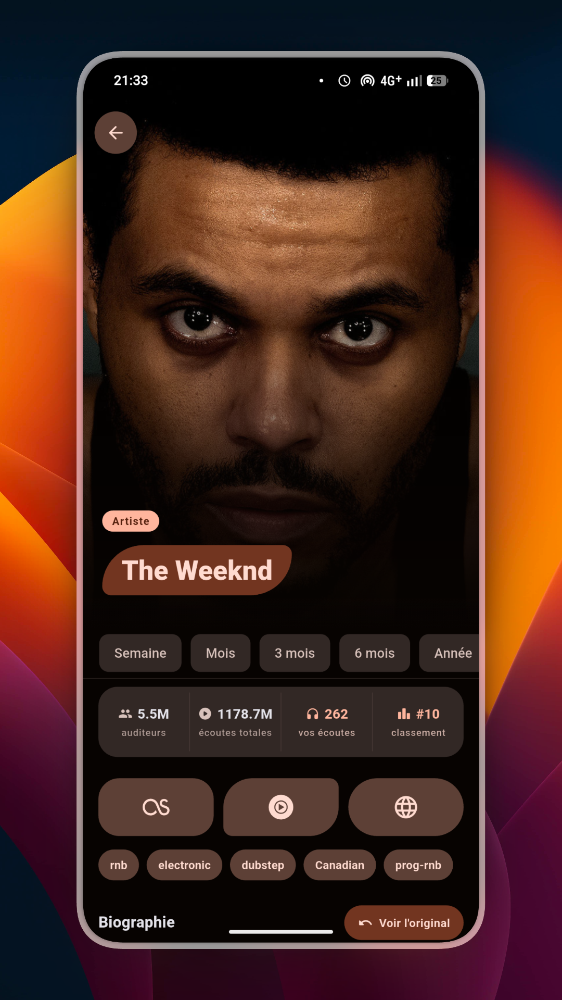
Fiche artiste complète
Biographie, vos statistiques sur l'artiste, tags, morceaux similaires : chaque artiste que vous écoutez mérite sa propre page complète.
Des fiches artiste animées
L'image de l'artiste s'anime en en-tête et les couleurs de la page s'accordent à elle, avec vos stats, ses tags et sa biographie juste en dessous.
Des fiches titre vivantes
Chaque titre a sa propre page : visuel animé, auditeurs, écoutes totales, vos écoutes et classement, avec un bouton favori et la lecture juste en dessous.
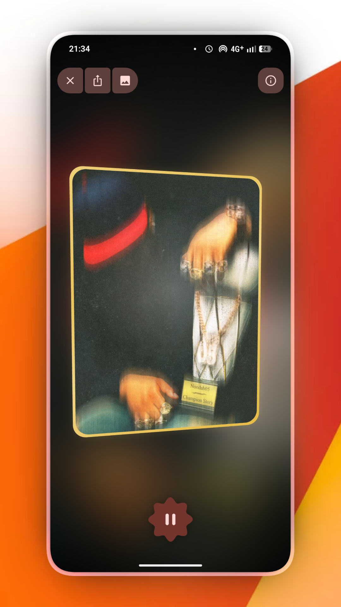
Des pochettes qui s'animent
Quand une pochette est animée, elle prend vie en plein écran dans sa carte 3D, avec un bouton pause et le partage en un tap.

La pochette en carte 3D
Une touche de raffinement : la pochette se retourne en 3D d'un simple tap, comme une véritable carte, pour révéler ses informations au dos.
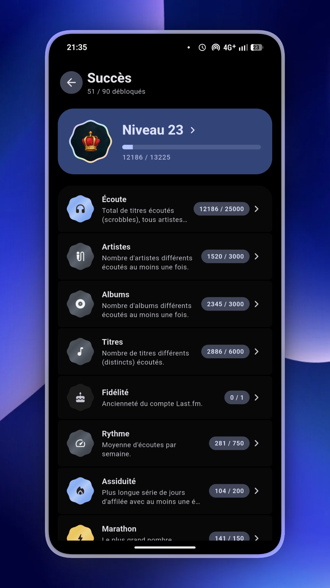
Débloque des achievements
Un système de niveaux fidèle à vos habitudes d'écoute, avec une collection d'achievements à débloquer au fil du temps.

Le profil de vos amis
Ouvrez le profil d'un ami pour voir ses scrobbles, son rythme d'écoute et ses succès, puis comparez vos goûts musicaux en un tap.

Compatibilité musicale
Un score de compatibilité avec un ami, détaillé par artistes, genres, titres et albums, avec tout ce que vous avez en commun.
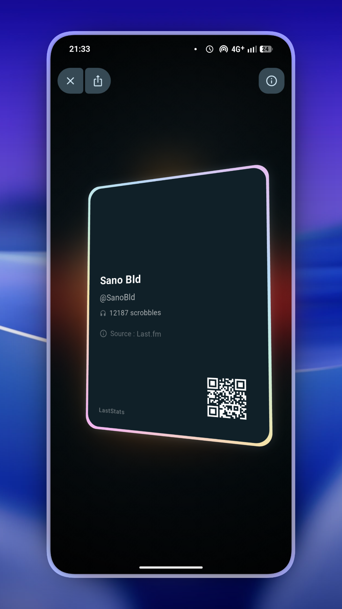
Partagez votre profil
Une carte de profil élégante avec votre nom, vos scrobbles et un QR code optionnel : il suffit de scanner l'image partagée pour retrouver votre profil.
Galerie
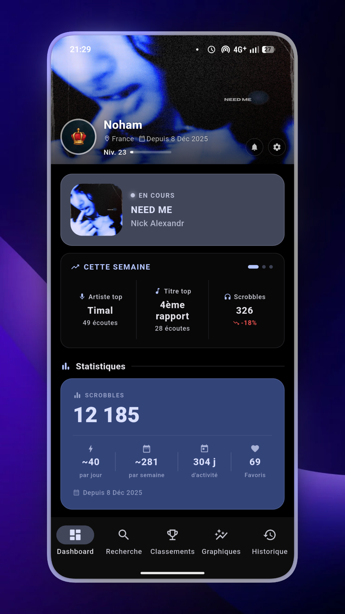
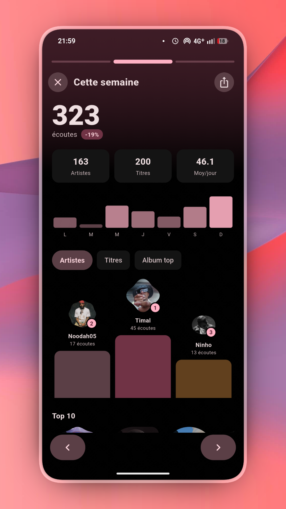
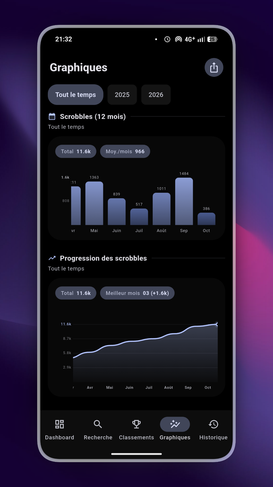
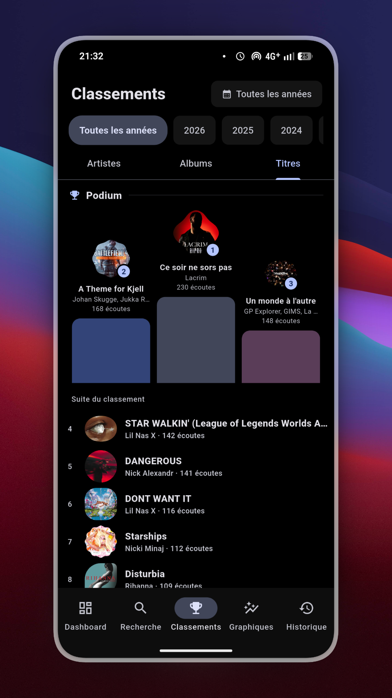
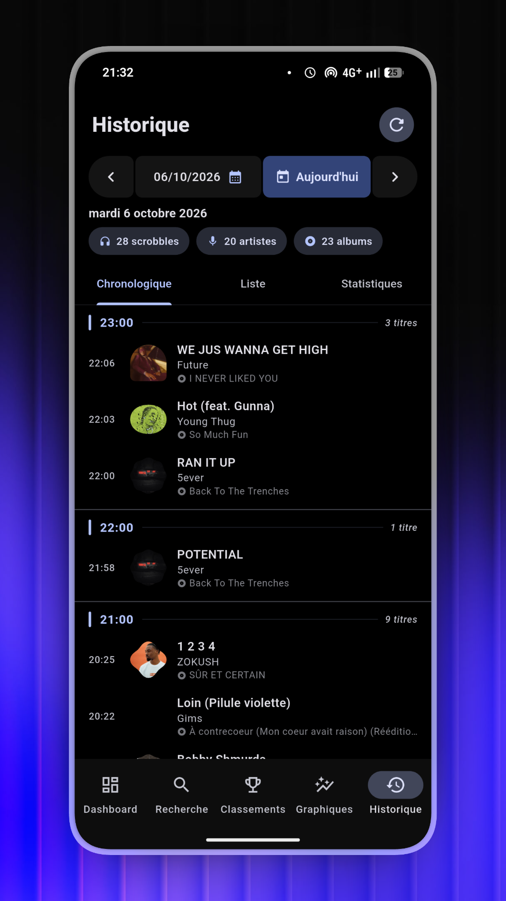

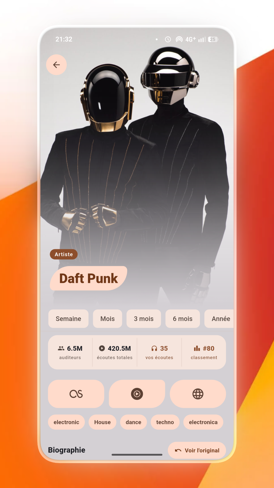

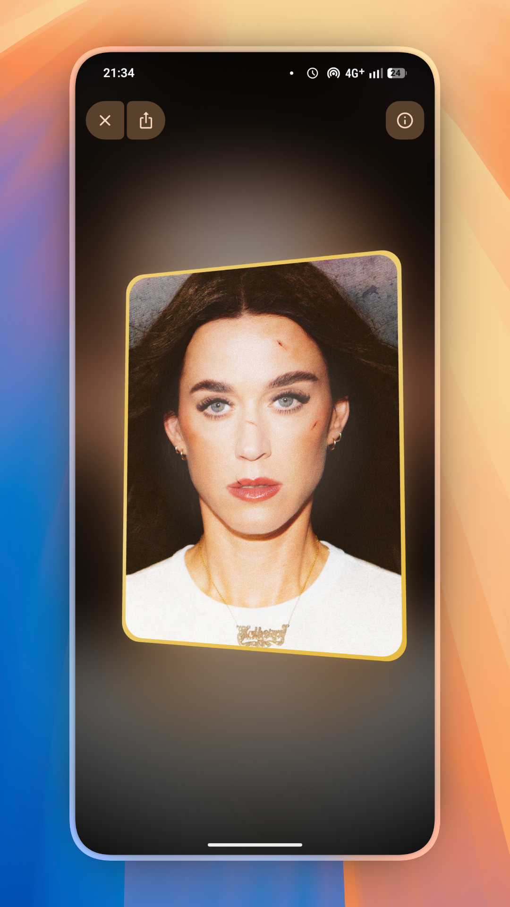

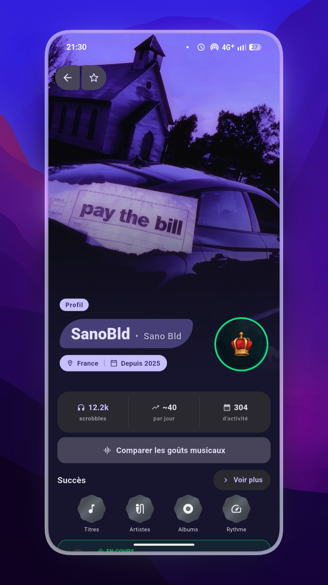
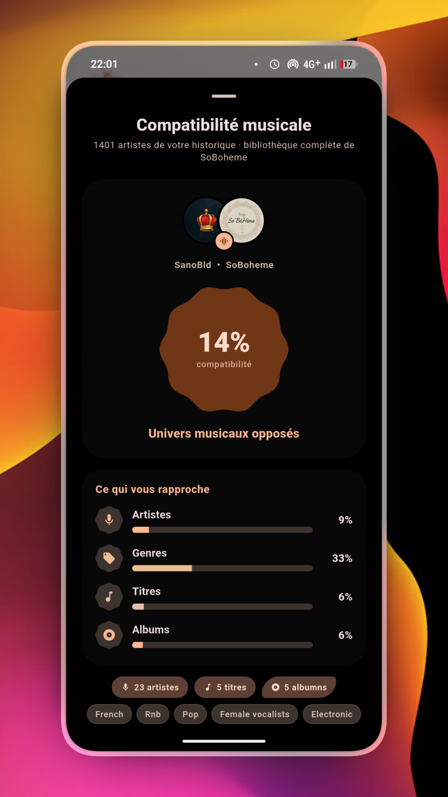

Faites glisser la galerie ou utilisez les flèches. Touchez une image pour l'agrandir.